Rigid Body Rotations
Contents
Rigid Body Rotations#
We begin our exploration of robotics with a discussion of rigid body
motion. As we’ll soon see, the concept of a rigid body, and the
subsequent development of its kinematics, is critical to having an
understanding of how we can develop intelligent, capable robots.
We’ll begin this chapter with a precise definition for a rigid body, and
will move on to classify and describe in detail the motions these rigid
bodies are able to achieve.
After this, we’ll be ready to piece together a systematic method for
describing the motion of almost any manipulator arm. We’ll develop
methods of solving for the position of a complex connected robot arm
just from its joint angles, and then move in reverse, solving for a set
of joint angles given an arbitrary position in space.
We’ll take a brief detour through the world of computer vision,
developing a geometric viewpoint on what it means for a robot to “see”
its environment.
Finally, we’ll conclude our work with an introduction to the dynamics
and control of robot manipulators. We’ll learn a fundamental and
powerful set of equations of motion that extend far beyond robot arms,
and use these equations to develop predictable and stable feedback
controllers.
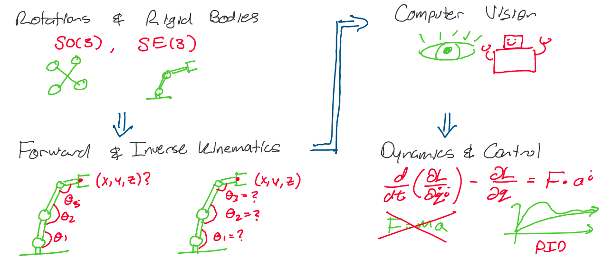
Above: A roadmap for our journey in this class
Along the way, we’ll learn lots of exciting mathematics and apply the theory we’ve learned in lab sections. Let’s get started!
Rigid Bodies & Rigid Body Motions#
What does it mean for a rotation to be rigid? How can we describe a rotational motion? In this section, we’ll answer these questions through a number of perspectives, ranging from simple intuitive definitions to more far-reaching mathematical consequences.
Reference Frames#
Before we discuss the motion of a rigid body, let’s review some
properties of the motion of a single particle in three dimensions.
In this class, when discussing the position of the particle, we always
define the position of a particle with respect to an orthonormal,
right-handed reference frame.
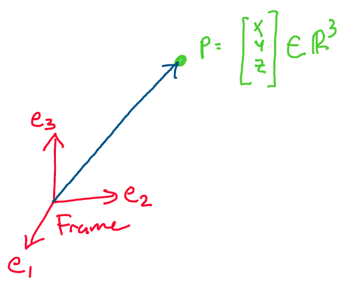
Above: The position of a particle is specified with respect to a reference frame
Let’s discuss what these terms mean. First, recall that a set of vectors \(V = \{v_1, v_2, ..., v_n\}\) is orthonormal if for all \(i, j\in\{1,2, ..., n\},\) the following is true:
In three dimensions, for example, an orthonormal reference frame is a set of three vectors with unit magnitude that are all mutually orthogonal (perpendicular). In the image above, for example, our reference frame is composed of three mutually orthogonal unit vectors: \(\{e_1, e_2, e_3\}.\) In an orthonormal frame, we may find the position coordinates of a particle by taking the projection of the particle’s position onto each of the the basis vectors of the frame. For the image above, for example:
What does it mean for a coordinate frame to be right
handed? For a three-dimensional space, if a frame is right handed, the
cross product of the first two basis vectors is equal to the third basis
vector. In the image above, for example, we find that taking
\(e_1 \times e_2\) gives us \(e_3,\) which makes the frame right-handed.
Why is this a property we’re interested in? In right-handed coordinate
frames, we may apply the “right hand rule” to compute cross products
within the frame. This is something we’ll find extremely convenient in
the future.
How may we describe how particles travel within these reference frames?
Generally, we’re not simply interested in the position of particles that
are stationary, but rather those that move with time.
When discussing the motion of a particle in time, our interest shifts
from looking at a constant position to a function that gives the
position of the particle at each instant in time.
The function of time specifying the position of a particle is called a
trajectory. For example, consider the trajectory of the particle
below:
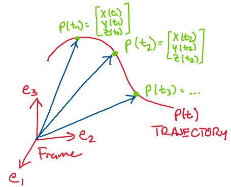
We may describe the trajectory of the particle above through the 3 dimensional curve:
As time passes, this function traces out a path in space. Notice how at every instant in time, this trajectory simply gives us a 3D position.
Points and Vectors: What’s the difference?#
Before we move on, it’s important to clarify the subtle differences
between two mathematical objects: points and vectors.
A point \(p\) is an object that exists in physical space. No matter
what coordinate frame it’s represented in, a point always refers to
the same fundamental physical position.
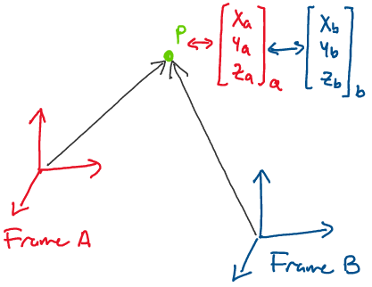
As can be seen in the image above, although the representations of the
point \(p\) appear to be different when written with respect to Frame A
and Frame B, the point itself is the same position in space.
A vector is defined as the difference between two points. For
example, if we have two points \(p, q \in \mathbb{R}^3,\) we may define a
vector \(v\in \mathbb{R}^3\) by:
Visually, this looks like the following:
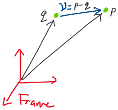
One major consequence of this definition is that unlike a point, a
vector is not a quantity that “belongs” to a position in physical
space! Let’s think about why this is.
Imagine we have four different points,
\(p, \; q, \; r, \; s \in \mathbb{R}^3,\) such that:
If we define a vector \(v = p-q,\) then \(v = r - s\) as well. Thus, even if we change the points, as long as the difference between the points is the same, the vector remains unchanged.
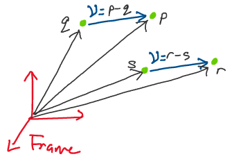
Above: Notice how despite the defining points being different, the vector is unchanged.
Because a vector doesn’t belong to a position in physical space in the
way that a point does, vectors are sometimes referred to as free
vectors.
Let’s now move beyond simple points and think about how we may describe
objects in the real world. Real-world objects typically don’t consist of
a single particle, but are rather composed of many particles.
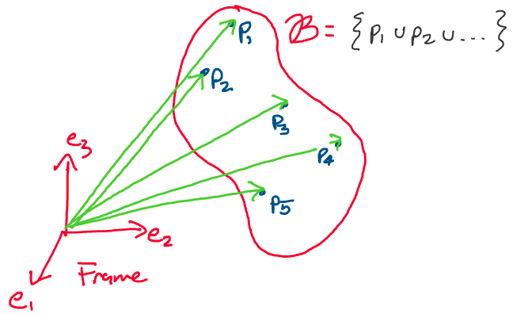
Above: An arbitrary body \(\mathcal{B},\) composed of many particles
However, a large set of particles seems like a challenging, impractical
description to deal with! How can we possibly describe the trajectory of
a real-world body if we have to keep track of infinitely many
particles?
To simplify our analysis, when describing the motion of many real
objects, we apply a “rigid body assumption.”
A rigid body is a body in which the distance between any two points
stays constant with respect to time.
We may express this mathematically as follows. Consider two arbitrary
points, \(p_1\) and \(p_2\) on a rigid body. For the body to be rigid, the
following must hold for all time t:
Where \(||p||\) represents the standard Euclidean norm on
\(\mathbb{R}^3.\)
Visually, what does this rigid body assumption look like? Consider the
following sketch, where a cell phone has been drawn at two instances in
time. We may make the reasonable assumption that the cell phone is a
rigid body.
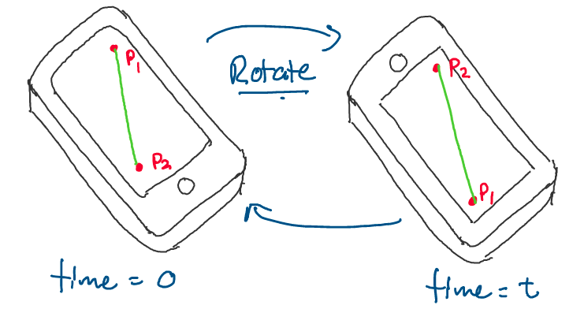
Above: A cell phone that gets rotated after time \(t.\) Notice how the distance between the two points remains the same.
As you can see, since the cell phone is a rigid body, the distance
between points \(p_1\) and \(p_2\) at time 0 is the same as the distance
between the points at time \(t,\) after we’ve rotated the phone.
Thinking more broadly about rigid bodies in robotics, we may consider
quadcopter drones, links of robot arms, aircraft, and many more to be
rigid bodies.
The Rigid Body Transformation#
Now that we have an idea of what it means for a body to be rigid, let’s think about what it means for a transformation to be rigid. In the following definition, note the similarities between rigid bodies and rigid body transformations.
Definition 1
Rigid body transformation
Let \(g\) be the transformation defined by
\(g:\mathbb{R}^3\to \mathbb{R}^3.\) \(g\) is a rigid body transformation
if:
\(g\) preserves length: For all \(p_1, p_2 \in \mathbb{R}^3\)
\[\begin{aligned} ||g(p_1) - g(p_2)|| = ||p_1 - p_2|| \end{aligned}\]\(g\) preserves relative orientation between vectors: For all \(p_1, p_2 \in \mathbb{R}^3\)
\[\begin{aligned} g(p_1)\times g(p_2) = g(p_1 \times p_2) \end{aligned}\]Where \(\times\) is the vector cross product.
Let’s examine the significance of these two conditions.
We can think about the first condition in an intuitive sense through our
cell-phone rotation example. If we define the rotation of the cell phone
as a transformation, \(g,\) we know:
This is because the distance between the two points on
the phone is the same before and after the rotation.
Let’s now work on visualizing the second condition for rigid body
transformations: \(g\) preserves orientation. Consider the transformation
pictured below, where we rotate about the z axis by 90 degrees, and x,
y, and z form an orthonormal basis.
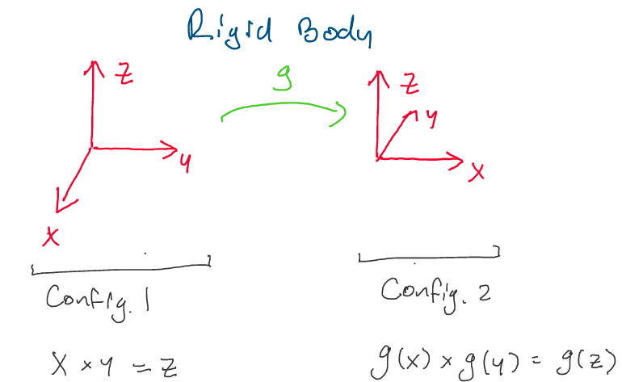
Let’s show that this transformation respects the second property of
rigid body transformations. In our computations below, we use the right
hand rule to quickly compute cross products.
From the initial condition, we notice:
Taking the transformation, g, of both sides, we get:
Now, let’s take the cross product of the transformed vectors in configuration 2 and observe the result. Once again applying the right hand rule:
Thus, since both are equal to \(g(z),\) we conclude:
Which satisfies the second property of a rigid body
transformation. As we can see from the two /images, even though the
vectors \(x\) and \(y\) have moved in space, they have moved together, and
the orientation between them remains the same.
What, then, would be a counterexample of a rigid transformation?
We can easily construct a counter example with a small modification of
the transformation above. Consider the transformation:
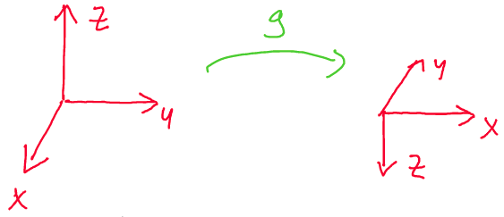
Here, we see that g does not preserve the orientation. Instead of
having \(g(x\times y) = g(x) \times g(y),\) we have
\(-g(x\times y) = g(x) \times g(y),\) as \(z\) gets flipped by the
transformation.
Thus, to avoid this orientation “flip” happening in rigid body
transformations, we include the second condition in the definition.
Early Consequences#
Let’s discuss some simple consequences of the definition of a rigid body
transformation. The following properties are foundational to our later,
more detailed descriptions of rigid body motion.
After you’ve read through the following results, take a moment to
appreciate how these properties come out of such a simple definition
with so few assumptions!
Proposition 1
Rigid body transformations preserve inner
products
If \(g: \mathbb{R}^3 \to \mathbb{R}^3\) is a rigid body transformation,
for any vectors \(x, y\in \mathbb{R}^3\):
Proof: Let’s begin our proof of this statement by rewriting the dot products in matrix-vector form:
To prove this statement as simply as possible, we make use of the polarization identity, which states:
First, recall that since \(g\) is a rigid body transformation, it preserves the length of vectors. This implies:
Now, recognizing the right hand side as the polarization identity applied to \(g(x)^Tg(y),\) we reach our goal:
Thus, rigid body transformations preserve inner products
between any two vectors. \(\square\)
This important property leads us to a second key point.
Proposition 2
Rigid body transformations of coordinate frames
If \(A = \{x, y, z\}\) is a right-handed orthonormal coordinate frame, and
\(g: \mathbb{R}^3 \to \mathbb{R}^3\) is a rigid body transformation, then
\(g(A) =\{g(x), g(y), g(z)\}\) is also a right-handed orthonormal
coordinate frame.
Proof: Recall that earlier, we defined an orthonormal coordinate
frame in 3D to be a set of three vectors that are of unit magnitude and
are all orthogonal to each other. Let’s now show that under a rigid body
transformation, these two properties still hold.
First, let’s prove that the transformation of each vector has unit
magnitude. As g is a rigid body transformation, it preserves length.
Thus:
Now, let’s show that the three vectors are still orthogonal. Recall that if two vectors, \(x, y\) are orthogonal, than \(x^Ty = 0.\) Thus, for our original coordinate frame, we have:
Recall that above, we showed that rigid body transformations preserve the inner product. Therefore, we may write:
Further, we know that because \(g\) is a rigid body
transformation, it will preserve the orientation between vectors through
the cross product. Thus, we conclude g(A) is a right-handed, orthonormal
coordinate frame. \(\square\)
What does this result mean for us in the context of rigid body motion?
If we were to attach a coordinate frame to a rigid body, using the
proposition above, we could use a rigid body transformation to describe
how the coordinate frame, and thus the rigid body, moves with time.
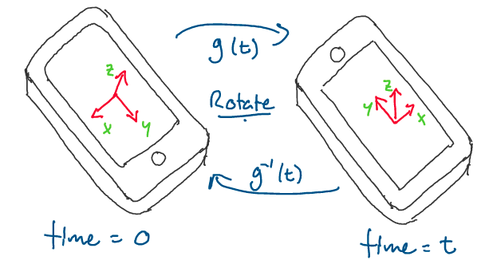
Above: By fixing a coordinate frame to the phone, we can use a rigid body transformation to describe how the phone’s configuration in space changes.
In the next section, we’ll discuss how to actually construct these transformations, as well as how we may determine some of their unique properties.
Rotations#
Now that we have an understanding of what it means for both a body and a
motion to be rigid, we can begin to construct the underlying mathematics
of rigid body motion.
To begin, let’s think about the different parts that make up any
arbitrary rigid body motion. For example, consider the rigid body motion
below:

Above: A rigid body translates and rotates between two configurations.
As can be seen in the image above, to change from configuration
\(\mathcal{B}\) to configuration \(\mathcal{B}',\) the rigid body
translated and rotated. In general, we propose that any rigid body
motion can be broken up into a translation and rotation.
In this section, we’ll choose to restrict our analysis to rotations, and
develop a systematic method for describing the rotations of rigid
bodies.
Rotation Matrices#
How can we describe the rotational configuration of a rigid body in 3D
space? Recall that previously, we showed that transformations between
coordinate frames are rigid body motions. Let’s take advantage of this
fact to develop a description of the rotational configuration of a rigid
body.
Consider the following scenario, where we have a rigid body and two
coordinate frames, one of which is attached to the rigid body.
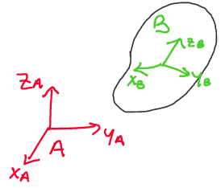
Above: How can we describe the angular position of the object in space?
When describing the configuration of a rigid body, we always define two
reference frames: the inertial frame and the body frame. The
inertial frame, also known as the world or global frame, is a frame
that remains stationary in the environment. In the above, frame A is the
inertial frame.
The body frame is a reference frame that remains fixed to the body for
all time. If the body rotates or translates, the body frame rotates and
translates with it. In the image above, frame B is the body frame.
Now that we have two reference frames, we may use our knowledge of
linear algebra to describe the relative configuration of the two frames.
By doing this, we will define the orientation of the body in space.
Let \(x_{ab}, y_{ab}, z_{ab} \in \mathbb{R}^3\) be the three body frame
vectors as represented in the world frame - \(x_{ab}\) is the vector \(x_b\)
represented in the world frame, \(y_{ab}\) is the vector \(y_b\) represented
in the world frame, and \(z_{ab}\) is the vector \(z_b\) represented in the
world frame.
Using these vectors, we define the following matrix:
This matrix is called the rotation matrix of B with
respect to A. It tells us all there is to know about the relative
orientation of the body with respect to the inertial frame. Why is
this?
If the columns of the matrix represent how the body frame appears in the
world frame, and the body frame is always fixed to the rigid body,
\(R_{ab}\) must tell us everything we need about the rigid body’s
configuration.
Let’s practice finding the rotation matrix between two frames for a few
simple examples.
Example: Find the rotation matrices \(R_{ab}\) and \(R_{ac}\) between
the inertial and body frames, where A is the inertial frame and B and C
are two body frames. The coordinates of the body frame vectors in the
world frame have been provided for you.
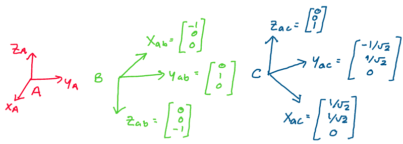
Let’s begin by forming the rotation matrix \(R_{ab},\) between frames A and B. We see from the image that the x-axis of the B frame is at \((-1, 0, 0)\) in frame A, the y axis of the B frame remains at \((0, 1, 0)\) in frame A, and the z axis of the B frame is \((0, 0, -1)\) in frame A. Thus, stacking the vectors alongside each other, we form the rotation matrix:
Notice that this rotation matrix corresponds to a
rotation about the y axis of 180 degrees. Note that because we’re
rotating around the y axis, the corresponding y column in the rotation
matrix remains unchanged.
We can then repeat this process to solve for the second rotation matrix.
Stacking the columns of coordinate vectors next to each other, we find:
This corresponds to a 45 degree rotation about the z axis. Once again, notice that the axis of rotation remains unchanged in the rotation matrix.
The Structure of Rotation Matrices#
Now that we’ve defined the rotation matrix, and have constructed some
simple examples, let’s work on developing the underlying structure of
rotation matrices.
In this section, we’ll explore common properties shared by all rotation
matrices, develop some important theorems, and discuss how to formally
classify the set of rotation matrices.
Let’s begin by examining some of the relations between the columns of a
rotation matrix. Let \(R \in \mathbb{R}^{3\times 3}\) be a rotation
matrix, where:
Proposition 3
Rotation matrices are orthonormal
If \(R\) is a rotation matrix with columns \(r_1, r_2, r_3,\) then for all
\(i, j \in \{1, 2, 3\}\)
Which implies:
Where \(I\) is the \(3\times3\) identity matrix.
Proof: First, we recall how we defined the columns of the rotation
matrix R. If R is a rotation matrix, then \(r_1, r_2, r_3\) must be the
coordinate vectors of an orthonormal reference frame.
If they are the coordinate vectors of an orthonormal reference frame, by
definition, for all \(i, j \in \{1, 2, 3\}\)
Let’s now rewrite the above definition in linear
algebraic terms. Recall that for arbitrary vectors \(x, y,\)
\(||x||^2 = x^Tx,\) and that the dot product \(x\cdot y = x^T y.\)
Using these facts, we rewrite the above as:
Therefore, we conclude:
This proves the first part of the proposition. Let’s now
show that the above implies \(R^TR = RR^T = I.\)
To do this, let’s expand the expression \(R^TR\) in terms of the
definition of the rotation matrix, \(R = [r_1 \; r_2 \; r_3].\)
Applying the rules of matrix multiplication, this gives us the expression:
Now, we simply apply the \(r_i^Tr_j\) result we proved above to find:
To prove the statement \(RR^T = I,\) we follow the same
exact procedure, and find that \(RR^T = I\) as well.
Thus, for any rotation matrix, we have the useful property that:
This concludes our proof. \(\square\)
So far, we’ve proved that rotation matrices are orthonormal - their
columns are mutually orthogonal and of unit magnitude. What else can we
show about these matrices?
Proposition 4
Determinant of a rotation matrix
For any rotation matrix \(R \in \mathbb{R}^{3x3},\)
\(\mathrm{det}(R) = 1.\)
Proof: We’ll tackle the proof of this statement in two parts. First,
we’ll show that the determinant of a rotation matrix must be 1 or -1.
Then, we’ll apply a special identity to show that it must, in fact,
be 1. Let’s get started!
We’ll begin this problem with a review of a few key facts from linear
algebra. First, recall that for any matrix \(A,\)
\(\text{det}(A^T) = \text{det}(A).\) Next, recall that for any
matrices \(A\) and \(B\) that can be multiplied,
\(\text{det}(AB) = \text{det}(A)\text{det}(B).\) With this in mind,
we can begin the proof.
Previously, we showed that \(R^TR = I.\) Let’s see if we can use this to
our advantage. Start by taking the determinant of both sides:
Taking the square root of both sides, we complete the first part of our proof:
How do we proceed from here to show that the determinant is just 1? Let’s think about how we define the determinant for a 3x3 matrix. Recall that for a 3x3 matrix \(R,\) where:
Using the property that the determinant of R is equal to the determinant of its transpose, we can perform a little bit of algebraic manipulation to arrive at the identity:
Let’s think about what this expression means in terms of reference frame vectors. Using the right hand rule, we know that since our frame is right handed, \(r_2 \times r_3 = r_1.\) Thus, we may substitute in for \(r_2 \times r_3\):
Thus, the determinant of \(R\) must equal 1! This
concludes our proof. \(\square\)
With these properties in our toolbox, we’re now ready to completely
classify the set of rotation matrices.
Definition 2
The special orthogonal group \(\mathbf{SO(3)}\)
The set of all \(3\times 3\) rotation matrices is called the special
orthogonal group, denoted \(\mathbf{SO(3)}.\) This set is defined:
This definition reads as follows: the set \(SO(3)\) is defined as the set
of all real \(3\times 3\) matrices \(R\) such that \(R^TR = I\) and
\(\mathrm{det}(R) = 1.\)
The “special” in special orthogonal refers to the fact that the
determinant of the matrix is \(+1,\) while the “orthogonal” refers to the
orthogonality of the matrix.
We may easily generalize this definition to \(n\) dimensions as
follows:1
Every rotation matrix defined according to our coordinate frame method will be an element of \(SO(3).\)
Mathematical Groups#
In mathematics, we love categorizing things. In Linear Algebra, we
often ask if we can categorize a certain set of vectors as a vector
space. In optimization, we often ask if we can classify a surface as
convex. The list goes on!
When we categorized these mathematical objects, we didn’t do so just for
the sake of organization, but also to gain access to certain properties.
For example, in linear algebra, if a set of vectors formed a vector
space, we knew that set would be closed under addition and scalar
multiplication.
In this section, we’ll show that the set of all \(3\times 3\) rotation
matrices, \(SO(3),\) falls into a type of category called a group.
With this realization will come a number of useful properties we’ll come
to enjoy over the duration of this course.
How is a group defined? Before we state the exact definition, it’s
important to make a few points about how abstract mathematical objects
are defined. We’ll also take a moment to review the definition of a term
that might be unfamiliar to some readers.
When we come up with a mathematical definition, we want it to be as
general as possible. This means that we want to make as few
assumptions as we can in our definition, so that definition can apply
to as many things as possible.
For example, our definition of \(SO(n)\) is quite general. It makes no
assumptions about the dimension of the matrix, which means we can apply
it to a square matrix of any size.
Before we define a group, we’ll define a very general operation called a
binary operation.
Definition 3
Binary operation
An operation \(\circ\) is called a binary operation if we can apply it to
two elements to produce another element.
A binary operation acts as follows:
For example, addition over the set of real numbers is a binary
operation. If we have two numbers, \(a, b \in \mathbb{R},\) we can apply
the binary operation \(+\) to create a new element: \(c = a + b.\)
Similarly, matrix multiplication is another binary operation. Let
\(A \in \mathbb{R}^{m\times n}\) and \(B \in \mathbb{R}^{n\times m}.\) Then,
we may apply the binary operation \(\cdot\) to create a new matrix
\(C = A\cdot B.\)
We’re now ready to discuss the definition of a group. After reading,
take a moment to appreciate how we maintain both precision and
generality in the definition!2
shaded definition
Definition 4
Group
A group \((G, \circ)\) is a set \(G\) together with a binary operation
\(\circ\) defined on \(G\) where the following hold:
\(G\) is closed under \(\circ\): For all \(g_1, g_2 \in G,\) \(g_1 \circ g_2 \in G\)
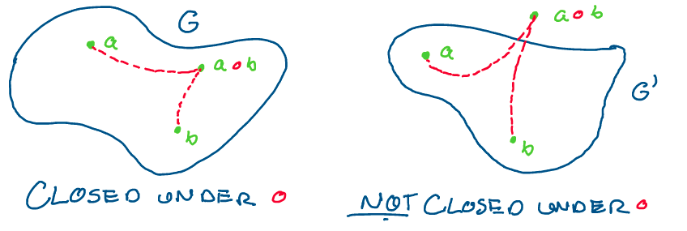
Above: The set on the left is closed under \(\circ.\) Applying the binary operation to two elements will never take it out of the set. The set on the right is not closed under \(\circ,\) as \(\circ\) can take elements of \(G\) out of the set.
\(G\) contains an identity element: There exists an element \(e\in G\) such that for any \(g \in G,\) \(e \circ g = g \circ e = g.\)
\(G\) contains a unique inverse for every element: For every element \(g\in G,\) there exists a unique element \(g^{-1} \in G\) such that \(g\circ g^{-1} = g^{-1} \circ g = e,\) where \(e\) is the identity element.
\(\circ\) is associative on \(G\): For all \(g_1, g_2, g_3 \in G,\) \(g_1\circ(g_2\circ g_3) = (g_1\circ g_2)\circ g_3.\)
Let’s go over a quick example to see how we can prove a set and binary
operation are a group.
Example: Show that \((\mathbb{R}, +)\) is a group.
Here, we want to show that the set of all real numbers together with the
binary operation of addition is a group. To show this, we must prove
that each of the four conditions above is satisfied. Let’s go down the
list!
First, we want to show \(\mathbb{R}\) is closed under \(+.\) That is, for all \(a, b \in \mathbb{R},\) \(a + b \in \mathbb{R}.\) We know that the sum of any two real numbers will give us another real number. Thus, this property is satisfied.
Next, we want to show that \(\mathbb{R}\) contains an identity element under \(+.\) We know that for any \(a \in \mathbb{R},\) \(a + 0 = a.\) Thus, an identity element exists for all \(a \in \mathbb{R}.\)
Now, we want to show that an additive inverse exists for each \(a \in \mathbb{R}.\) We know that for any \(a \in \mathbb{R},\) \(a + (-a) = 0.\) Thus, every element of \(\mathbb{R}\) has an inverse under addition.
Finally, we want to show that addition is associative. By properties of addition, we know that this is true, as \((a+b)+c = a+(b+c)\) for all \(a, b, c \in \mathbb{R}.\)
As \((\mathbb{R}, +)\) satisfies all of the necessary properties, we conclude that \(\mathbb{R}\) is a group under addition. This completes our proof! \(\square\) Now that we’ve defined a group and have gone over a simple proof, let’s try to show that the set of all \(3\times 3\) rotation matrices, \(SO(3),\) is a group under matrix multiplication.
Proposition 5
\(\mathbf{(SO(3), \cdot)}\) is a group
The set of all \(3\times 3\) rotation matrices, \(SO(3),\) is a group under
the binary operation of matrix multiplication.
Proof: Let’s follow the same proof template as we did for \((\mathbb{R}, +)\): we’ll go through each group property and show, one at a time, that each property holds in \(SO(3)\) under matrix multiplication.
First, we want to show that given any two rotation matrices \(R_1, R_2 \in SO(3),\) their product \(R_1R_2 \in SO(3).\) This will prove that \(SO(3)\) is closed under matrix multiplication.
How do we go about showing this? Recall the definition of \(SO(3)\):\[\begin{aligned} SO(3) := \{R\in \mathbb{R}^{3x3}| \; R^TR = I,\; \mathrm{det}(R) = 1\} \end{aligned}\]Thus, to show that \(R_1R_2\in SO(3),\) we must show that \(\mathrm{det}(R_1R_2) = 1\) and that \((R_1R_2)^T(R_1R_2) = I.\)
Let’s start by showing that the determinant of \(R_1R_2\) equals 1. Remember, since \(R_1, R_2 \in SO(3),\) we already know that \(\mathrm{det}(R_1) = \mathrm{det}(R_2) = 1.\) Let’s expand the expression \(\mathrm{det}(R_1R_2)\):\[\begin{aligned} \mathrm{det}(R_1R_2) = \mathrm{det}(R_1)\cdot \mathrm{det}(R_2) = 1\cdot 1 = 1 \end{aligned}\]Perfect! Now, we need to show \((R_1R_2)^T(R_1R_2) = I.\) Let’s expand this expression:
\[\begin{aligned} (R_1R_2)^T(R_1R_2) = R_2^TR_1^TR_1R_2 \end{aligned}\]Since \(R_1, R_2 \in SO(3),\) we know \(R_1^TR_1 = R_2^TR_2 = I.\) Thus:
\[\begin{aligned} R_2^TR_1^TR_1R_2 = R_2^TIR_2 = R_2^TR_2 = I \end{aligned}\]Therefore, the product \(R_1R_2 \in SO(3).\)
Next, we want to show \(SO(3)\) contains an identity element under matrix multiplication. We need a matrix \(E\in SO(3)\) such that for any other matrix \(R \in SO(3),\) we have: \(RE = ER = R.\) What might this matrix be?
Immediately, we consider the \(3\times 3\) identity matrix, \(I.\) We know that for any matrix \(R \in SO(3),\) we have: \(RI = IR = R.\) Now, all we need to do is show that the identity matrix \(I\in SO(3)\) and we’re good to go!
Clearly, \(\mathrm{det}(I) = 1\) and \(I^TI = II^T = I.\) Thus, \(I\in SO(3)\) is the identity element.Now, we want to show a unique multiplicative inverse exists for every \(R \in SO(3).\) Recall that the inverse of a matrix \(A\) is a matrix \(A^{-1}\) such that \(AA^{-1} = A^{-1}A = I.\)
First, let’s show that every element of \(SO(3)\) is actually invertible. Recall that a matrix is invertible if its determinant is nonzero.
Because for all \(R\in SO(3),\) \(\mathrm{det}(R) = 1,\) we know rotation matrices will always be invertible. Further, from our knowledge of linear algebra, we know that whatever this inverse matrix might be, it is unique.
How can we find this matrix? We know that for all \(R\in SO(3),\) \(R^TR = RR^T = I.\) Thus, looking at the definition of a matrix inverse, we conclude \(R^{-1} = R^T\) for all rotation matrices \(R \in SO(3).\) Because we can always take the transpose of a matrix, a multiplicative inverse exists for every element of \(SO(3).\)Finally, we want to show that matrix multiplication is associative on \(SO(3).\) Because matrix multiplication is associative for all matrices, this is automatically true.
Now that we’ve shown \((SO(3), \cdot)\) meets all of the conditions to be a group, we conclude that the set of all rotation matrices is a group under matrix multiplication. This completes the proof! \(\square\)
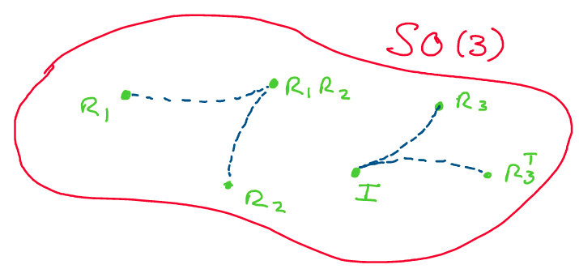
Above: A visualization of some of the properties of \(SO(3).\)
Amazing! We’ve just shown that despite it representing a fairly
restrictive physical idea, \(SO(3)\) has a lot of great properties and
structure that we can make use of! However, it’s easy to make some
mistakes regarding properties of \(SO(3).\) Always keep in mind: although
\(SO(3)\) is a subset of \(\mathbb{R}^{3\times 3},\) it is not a vector
space!
This means the following:
\(SO(3)\) is not closed under addition. That is, if \(R_1, R_2 \in SO(3),\) it’s not always true that \(R_1 + R_2 \in SO(3).\) As a counterexample, let \(R_1 = R_2 = I.\) Then, \(R_1+R_2 = 2I.\) When we take the determinant, we find: \(\mathrm{det}(R_1+R_2) = 2,\) which means the sum is not in \(SO(3).\)
\(SO(3)\) is not closed under scalar multiplication. If \(R \in SO(3)\) and \(c \in \mathbb{R},\) it’s not true that \(cR \in SO(3).\) Once again, we can take the identity matrix as an example of this. if \(R = I\) and \(c = 2,\) then \(\mathrm{det}(R) = \mathrm{det}(2I) =8.\) Thus, the scalar multiple is not in \(SO(3).\)
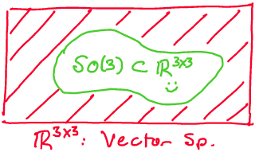
Above: Although the set \(\mathbb{R}^{3x3}\) is a vector space of matrices, \(SO(3) \subset \mathbb{R}^{3x3}\) is just a subset, not a subspace.
Because every rotation of a rigid body has an associated rotation matrix, \(R \in SO(3),\) we call \(SO(3)\) the configuration space of a rigid body which is able to rotate. This simply means that whatever the rotational configuration of the body is, we’ll be able to describe it with some rotation matrix \(R.\)
Rotation Matrices as Coordinate Transformations#
As you may recall from your coursework on linear algebra, there’s more
than one way to interpret a matrix.
In linear algebra, we use matrices to represent everything ranging from
systems of linear equations to linear transformations to changes of
coordinates. In the context of rotations, what are the different ways in
which we can think about rotation matrices in \(SO(3)\)?
Thus far, we’ve primarily discussed rotation matrices as a means of
representing the angular configuration of a rigid body in space. To
represent configuration, we defined the columns of a rotation matrix as
the basis vectors of some orthonormal, right handed reference frame.
Now, let’s consider an alternate meaning of a rotation matrix: as a
coordinate transformation. Due to the multi-faceted nature of matrix
transformations, rotation matrices not only give us the configuration of
a rigid body, but also allow us to transform between two coordinate
frames!
Let’s see how we can develop this perspective. Consider the following
image, where frames A and B are offset by a rotation and a vector
\(v \in \mathbb{R}^3\) lies in space.
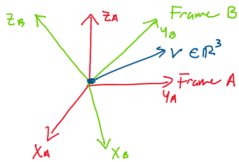
Let’s try to write this vector in coordinate frames A and B. First, imagine that in frame B, the vector \(v\) has the following representation:
Now, let’s rewrite it in terms of frame A. To do this, instead of writing the vector using the basis vectors of frame B, as viewed in frame B, we’ll use the basis vectors of frame B as viewed in frame A. We denote these \(\{x_{ab}, y_{ab}, z_{ab}\}.\)
Let’s now rewrite this as a matrix multiplication, and see if anything interesting jumps out at us:
As you may recall, we defined the rotation matrix of frame B with respect to frame A, \(R_{ab},\) as \(R_{ab} = [x_{ab} \; y_{ab} \; z_{ab}].\) Thus, rewriting the expression above, we find:
Therefore, we conclude that in addition to
representing the configuration of a rigid body with respect to the world
frame, rotation matrices also transform vectors from the body frame to
the world frame.
Let’s do a quick example to see how this works in practice.
Example: In frame B, the vector \(v\) has the representation
\(v_b = (1, 1, 3).\) Rewrite this vector in frame A, given the relative
configurations of the two frames:
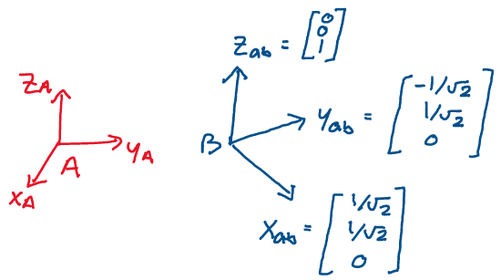
Let’s begin by writing out the rotation matrix \(R_{ab}.\) Once we have the matrix, all we need to do is multiply it by the vector in frame B to find its equivalent representation in frame A.
Now, we simply multiply \(R_{ab}\) and \(v_b\) to find \(v_a.\)
Performing the matrix multiplication, we reach our final answer:
Rotations as Rigid Body Transformations#
So far, we’ve looked at a number of properties of rotation matrices and
the \(SO(3)\) group. However, there’s one thing that we haven’t yet
formalized: are rotations actually rigid body transformations?
In this section, we’ll focus on proving this essential fact in terms of
the mathematical definition of a rigid body transformation we gave
earlier.
Before we do this, however, we’ll need to develop a little bit more
linear algebraic machinery to help us out.
The first tool we’ll need is the cross product. Let’s think back to how
we traditionally defined the cross product of two vectors. Recall that
given two vectors, \(a, b\in \mathbb{R}^3,\) their cross product,
\(a\times b,\) was defined:
Geometrically, what does this give us? Using some simple algebra, we can show that for any vectors \(a, b\in \mathbb{R}^3,\) \(a\times b\) is orthogonal to both \(a\) and \(b.\) Using this fact, and applying the right hand rule to find the direction of the vector, this gives us the following image:
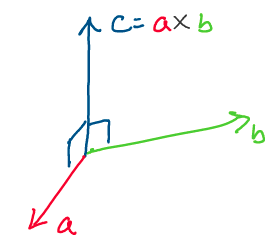
Above: the cross product of \(a\) and \(b\) produces a vector perpendicular to the two
It’s interesting to note that the cross product of \(a\) and \(b\) is not
only perpendicular to \(a\) and \(b,\) but also the entire plane spanned
by \(a\) and \(b.\)
Let’s try to think critically about how else we could represent a cross
product. As you may recall from your math coursework, the cross product
is linear in each vector. For example, in the equations below, we
observe that the cross product is linear in \(a,\) where
\(a, b, c \in \mathbb{R}^3\) and \(d \in \mathbb{R}.\)
This linearity tells us that we can actually think of taking the cross product of any vector in \(\mathbb{R}^3\) with the vector \(a\) as a linear transformation from \(\mathbb{R}^3\) to \(\mathbb{R}^3.\)
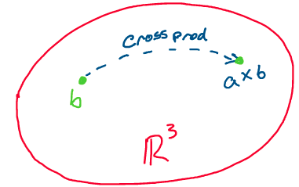
Above: The cross product of a vector with another vector is a linear transformation from \(\mathbb{R}^3\to \mathbb{R}^3\)
Because this cross product “transformation” is a linear transformation from \(\mathbb{R}^3\to \mathbb{R}^3,\) we may write it as a \(3\times 3\) matrix! Let’s define the matrix of the linear transformation of taking the cross product with a vector \(a \in \mathbb{R}^3.\)
Definition 5
The hat map
The hat map of a vector,
\(\wedge:\mathbb{R}^3 \to \mathbb{R}^{3\times 3}\) is defined:
Such that for any vector \(b \in \mathbb{R}^3\):
Thus, any time we want to take the cross product of two vectors, we can equivalently write it as a matrix-vector multiplication. This will help us prove some useful properties of the cross product! Note that the notations \((a)^\wedge\) and \(\hat{a}\) are both used to represent the hat map of \(a.\)
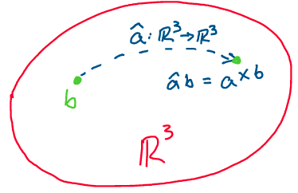
Above: multiplication by the hat map of a vector is equivalent to taking the cross product with that vector
Let’s now prove some interesting properties of the hat map and see how it interfaces with rotation matrices.
Proposition 6
Hat map properties
For all \(R \in SO(3)\) and all \(v, w \in \mathbb{R}^3,\) the following
hold:
Proof: Let’s start with the first statement. In this problem, the
proof is quite computational - we’ll take a direct algebraic approach
and perform the matrix multiplications.
To begin, let’s call the rows of \(R\) \(\{r_1, r_2, r_3\},\) such that
\(R^T = [r_1\; r_2 \; r_3].\) To compute the left hand side, we want to
perform the multiplication:
Now, let’s perform the next matrix multiplication and see what we get! After this multiplication, we’ll rewrite out the result in terms of standard dot and cross products for extra clarity.
Now, let’s see if we can recognize any of the terms within! First, recall that any vector is orthogonal to the cross product of itself with another vector. This means that all of the diagonal terms in the matrix above disappear.
Now, we can apply a further simplification of the above.
You may recall from your math classes that for any vectors
\(a, b, c\in \mathbb{R}^3,\)
\(a\cdot(b\times c) = c\cdot (a\times b) = b\cdot (c\times a).\) This is
known as the scalar triple product. Further, we recall that the
coordinate frame formed from the rotation matrix, \(\{r_1, r_2, r_3\},\)
is right handed.
Let’s apply these ideas to the off-diagonal terms in the matrix and see
if we notice any familiar structure.
Now, we notice that this looks exactly like the hat map of some vector! Let’s work backwards to extract what that vector is. Using the definition of the hat map:
This completes the proof of the first statement. Phew
that was a lot of multiplication!
In just a moment, we’ll show that the second statement is also true.
\(\square\)
We now have all the tools we’ll need to prove that rotations are rigid
body transformations. Let’s do it!
Proposition 7
Rotations are rigid body transformations
Given an arbitrary rotation \(R \in SO(3),\) \(R\) is a rigid body
transformation. This means for all \(R \in SO(3),\) all points
\(p, q\in \mathbb{R}^3\) and all vectors \(v, w\in \mathbb{R}^3\):
Multiplication by \(R\) preserves length: \(||R(p-q)|| = ||p - q||\)
Multiplication by \(R\) preserves orientation: \(R(v\times w) = (Rv)\times(Rw)\)
Proof: Let’s begin by proving the first statement. Our approach in
this problem will be to prove that \(||R(p-q)||^2 = ||p - q||^2.\) This
will allow us to convert this from a problem about distance to a problem
about matrix multiplication, which will be easier to work with.
First, we recall the fact that for any vector \(v,\) \(v^Tv = ||v||^2.\)
Let’s apply this to the left hand side:
Now, recalling that for any \(R\in SO(3),\) \(R^T = R^{-1},\) we get:
Thus, if \(||R(p-q)||^2 = ||p-q||^2,\) then
\(||R(p-q)|| = ||p-q||,\) as the norm of a vector is always greater than
or equal to 0. This proves the first part! Let’s move on to the second.
Recall that we’d like to show \(R(v\times w) = (Rv) \times (Rw).\) We can
do this by making use of the statement we just proved about the hat
map.
Let’s begin by rewriting the right hand side of the statement in terms
of the hat map.
Now, remembering that \(R^{-1} = R^T,\) we simplify:
This completes the proof! \(\square\)
Thus, we’ve finally confirmed that a rotation is a rigid body transformation.
Exponential Coordinates#
So far, we’ve taken a look at a selection of the many properties of
rotation matrices. We’ve talked about rigid body transformations,
coordinate frames, the hat map, and more!
In this section, we’ll learn more about the underlying structure that
generates rotation matrices, and ask ourselves if there’s any other way
to generate a rotation matrix.
We’ll have a little bit of mathematical exposition before we get to our
final exciting result! In this section, we’ll move through the following
trajectory:
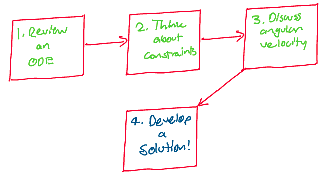
At each step, we’ll uncover a new piece of the rotation matrix puzzle. Let’s get started!
An Important ODE#
Before we look further into rotation matrices, we’ll perform a short
review of an important ordinary differential equation.
Upon first glance, this might seem only tangentially related to what
we’ve been talking about, but this equation will soon open up an almost
miraculous resolution of rotation matrices. Let’s begin!
The differential equation \(\dot{x}(t) = ax(t),\) where
\(a, x, t \in \mathbb{R},\) is one of the simplest yet most fundamental
differential equations in math. Let’s review its solution.
Note that if you haven’t seen “dot” notation before, it simply
represents a derivative with respect to time. If you see two dots above
a variable, for example \(\ddot{x},\) that refers to the second derivative
of \(x\) with respect to time.
To begin, we’ll rewrite this equation using Leibniz notation for
derivatives to get a clearer picture of what’s going on.
Let’s bring the \(dt\) over to the right side of the equation.
To be able to solve for x(t), we must integrate both
sides of this equation. To perform this integration, we bring all of the
\(x\) terms to one side of the equation, where the \(dx\) is, and all of the
\(t\) terms to the other side of the equation, where the \(dt\) is. This is
known as separation of variables.
Let’s move \(ax\) to the left side of the equation by dividing by \(ax\) on
both sides.
Great! All of the variables have now been separated.
Now, we’re ready to integrate. Let’s begin our integration at time
\(t = 0,\) and assume an initial condition of \(x(0) = x_0.\)
Note that when performing integration, we switch from \(x\) and \(t\) to
“dummy variables” \(\chi\) and \(\tau\) to maintain proper mathematical
notation.
Let’s assume for simplicity that \(ax\) is greater than \(0\) for all time. This allows us to integrate the equation to become the following:
Let’s simplify and solve for \(x\) to find our solution.
Thus, the solution to \(\dot{x}(t) = ax(t)\) with an
initial condition \(x(0) = x_0\) is \(x(t) = e^{at}x_0.\)
As we move through this section, keep this result in the back of your
mind - the title of this section, exponential coordinates, is a small
hint towards this solution’s importance!
Constraints on \(\mathbf{SO(3)}\)#
Let’s take a moment to think about vector spaces. As you may recall from
your linear algebra coursework, the dimension of a vector space is
equal to the maximum number of linearly independent vectors within the
space. This “maximal” set of linearly independent vectors forms a basis
for the vector space.
Let’s think about the vector space of real \(2\times 2\) matrices. This is
a four dimensional vector space, where a potential basis is as follows:
Using just these four matrices as a basis, we may
construct any real-valued \(2\times 2\) matrix.
Building off of this representation, we can show that the vector space
of \(n\times n\) dimensional real matrices is \(n^2\)-dimensional.
This implies that the vector space of all \(3\times 3\) real matrices,
\(\mathbb{R}^{3\times 3}\) is \(9\)-dimensional.
As can be seen in the matrix above, there are 9 numbers
we can independently change in this space.
What implications does this have for \(SO(3)\)? Does this mean that
\(SO(3)\) is also a 9 dimensional space? For the matrix below, are we
allowed to independently change all 9 elements, or are there some
restrictions holding us back?
Let’s think back to how we defined \(SO(3)\) to try and answer these questions. Recall that one of our conditions for a matrix \(R\) being an element of \(SO(3)\) was that \(R^TR = I.\) Written out element-wise, this implied that for all \(i, j \in \{1, 2, 3\}\):
How many restrictions does this condition impose on rotation matrices? Firstly, all 3 vectors composing the rotation matrices have to be orthogonal. This gives the following three conditions:
Secondly, all three vectors have to have unit magnitude. This gives three more conditions:
Thus, \(SO(3)\) has \(6\) conditions imposed on it, meaning
that there can’t possibly be 9 independent values we can change in any
rotation matrix.
As \(SO(3)\) is a subset of a 9 dimensional space, and has 6 restricting
conditions, we should be able to describe each element of \(SO(3)\)
using \(9-6 = 3\) independent parameters! What could they be?
The Angular Velocity Vector#
The answer to this section’s pressing question comes in the form of the
angular velocity vector. If you’ve taken any courses in physics
before, this might be a term you recognize.
Let’s discuss what angular velocity is, and how it relates to linear
velocity! We’ll begin with a simple 2-dimensional example: a pendulum
swinging about a fixed point \(r\) meters away.
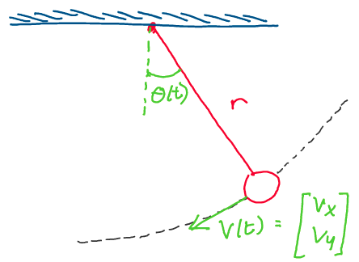
As you can see in the image above, the pendulum traces out a circular
path about its point of attachment as time goes on. How can we describe
how quickly it swings?
One way to do this would be to use its velocity vector, which is
sketched out in green on the image. If we were to take the norm of the
velocity vector, we could get a good idea of how quickly the pendulum is
moving.
However, a much more natural approach to measuring the pendulum’s
rotational speed is to use its angular velocity. If we define an angle
\(\theta\) between the vertical and the pendulum, and track it over time,
we can gauge how quickly the pendulum rotates.
The angular velocity (\(\omega\)) of the pendulum is the time
derivative of this angle theta, and has units of radians per second.
For this simple 2D example, we can easily relate the angular velocity to the magnitude of the velocity vector with the following equation:
Thus, the distance to the point of rotation and the
angular velocity about the point of rotation enable us to describe the
linear velocity of the end of the pendulum.
Let’s move up a dimension into 3D. In three dimensions, we define the
angular velocity vector to be the vector \(\omega \in \mathbb{R}^3\)
such that:
Where \(v\in \mathbb{R}^3\) is the velocity of a point and
\(r\in \mathbb{R}^3\) the position vector of a point in 3D space.
Geometrically, what does this look like? Consider the following example,
where a particle \(p\) orbits the origin in 3D space, tracing out the
dotted line as it goes.
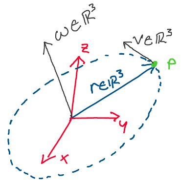
Above: A particle \(p\) orbits the origin in 3D space
As can be seen in the image above, if we use the right hand rule to take
the cross product between \(\omega\) and \(r,\) we find that we get the
velocity, \(v.\) We also see that the direction of \(\omega\) gives us the
axis of rotation, while the magnitude of \(\omega\) gives us the rate
of rotation.
In component form, the angular velocity vector is written:
Where each component refers to the rotational rate about
each axis of the reference frame. Note that
\(\omega_x, \; \omega_y, \; \omega_z\) are all specified in units of
radians per second.
Let’s now bring this discussion back to our study of rotation matrices.
Clearly, the angular velocity vector is intrinsic to the motion of a
rotating body. Furthermore, it has 3 independent components, which is
the number we were looking for to parameterize \(SO(3).\) How can we use
this vector to help us describe rotations?
An Exponential Solution#
After lots of deliberation, we’re now ready to tackle our grand challenge: finding a new way of representing rotation matrices. In this section, we’ll pull together everything we’ve discussed about ODEs, constraints, and angular velocity to come up with an elegant representation of rotations: exponential coordinates.
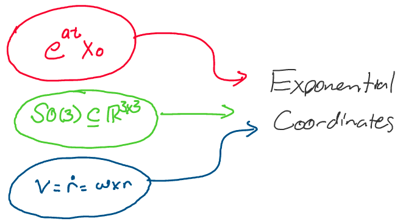
Consider the following image, in which an arbitrary rigid body \(\mathcal{B}\) rotates with a constant angular velocity \(\omega \in \mathbb{R}^3\) with respect to a fixed inertial frame A. In addition to being constant, suppose \(\omega\) has unit magnitude.\
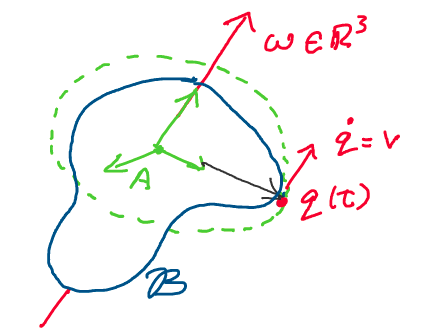
Let’s describe the velocity of a point \(q\) on the rigid body. Recall
that velocity is simply the time derivative of position (\(\dot{q} = v\)).
Now, we’ll relate this velocity to the body’s angular velocity vector.
Using what we developed in the previous section, we know we can express
velocity as:
Let’s think about what this expression is. We have the
time derivative of \(q\) on the left hand side, and a constant matrix
\(\hat\omega\) multiplied by \(q\) on the right hand side. This matrix
differential equation exactly mirrors the scalar differential equation
\(\dot{x} = ax(t)\) that we discussed earlier!
We may prove that the solution to this differential equation is:
Where \(q_0\) is the position of \(q\) at time \(t = 0\) and
\(e^{\hat\omega t}\) is the matrix exponential of \(\hat\omega t.\)
The matrix exponential is defined as follows:
Definition 6
The matrix exponential
Given any matrix \(A \in \mathbb{R}^{n\times n},\) the matrix exponential
of A, denoted \(e^A,\) is computed according to the Taylor series
expansion of \(e^x\):
Where \(I\) is the \(n\times n\) identity matrix and \(A^0 = I.\)
Using the powerful concept of the matrix exponential, we’ve solved the differential equation for the rotational motion of the point \(q.\) But, we’re not quite done yet! We still need to link this back to rotation matrices.
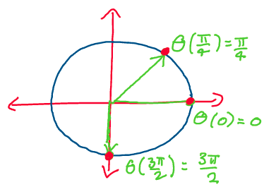
Above: Rotating with a unit magnitude angular velocity. For every time, the time equals the angle (assuming zero initial condition).
Recall that earlier, we stated that \(\omega\) has unit magnitude. This
means that the rigid body rotates with an angular velocity of 1 radian
per second. If a single second corresponds to a single radian, then we
can replace time, \(t,\) in the differential equation with an angular
displacement, \(\theta,\) as the two are equivalent (at time 0,
displacement will always be 0).
Thus, replacing \(t\) with \(\theta,\) we have:
Where \(e^{\hat\omega \theta}\) is calculated:
Thus, using the matrix exponential, we can calculate the position of q given any angle \(\theta\) and any axis of rotation \(\omega.\) Because we are rotating from \(q_0\) to \(q(\theta),\) the transformation \(e^{\hat\omega \theta}\) is a rotation matrix:
This rotation matrix gives us a rotation of angle
\(\theta\) about an axis of rotation \(\omega.\)
Thus, we conclude that we can parameterize a rotation matrix
\(R\in SO(3)\) through an axis of rotation, \(\omega \in \mathbb{R}^3\) (an
angular velocity of unit magnitude), and an angle of rotation \(\theta\)
as \(R(\omega, \theta) = e^{\hat\omega\theta}.\) What an amazing result!
\(so(3)\)#
Although we’ve done much of the work, our development of these
“exponential coordinates” isn’t finished yet! Before we go any further,
let’s take a moment to briefly discuss the class of matrices used in
these exponential solutions.
Recall from the definition of the hat map that if we have a vector
\(\omega = (\omega_1, \omega_2, \omega_3)\in \mathbb{R}^3,\) its hat map
is:
If we take the transpose of this matrix, we find:
Interestingly, this leads us to conclude:
For all \(\omega \in \mathbb{R}^3.\) All matrices with
this property are called skew symmetric.
Using linear algebra, we can prove the useful fact that the set of skew
symmetric matrices is a vector space! This means that adding any two
skew symmetric matrices will produce another skew symmetric matrix
(closure under addition), and that multiplying any skew symmetric matrix
by a constant will also produce another skew symmetric matrix (closure
under scalar multiplication).
We refer to the vector space of all \(3\times 3\) skew symmetric matrices
as \(\mathbf{so(3)}.\) Formally, we define \(so(3)\) to be:
Let’s think about the different maps and transformations
we’ve discussed in terms of \(so(3)\) and \(SO(3).\)
First, consider the hat map. Recall that this took us from a vector in
\(\mathbb{R}^3\) to a skew symmetric matrix.
Now, consider the exponential map. How did we use the matrix exponential? Recall that by taking the matrix exponential of the hat map of a vector, we produced a rotation matrix. Thus:
Closing the Exponential#
We finally have our new representation of rotation matrices through
exponential coordinates, we’ve looked at properties of the vectors
generating these matrices, and have defined a set of maps between
different groups of vector spaces.
Before we move on, we have one more thing to finish up! If you recall
from above, to use exponential coordinates, we made use of the matrix
exponential, which was defined by the infinite series:
If we want to actually compute a rotation matrix using these exponential coordinates, we certainly can’t do so using a full infinite series! In this section, we’ll look for an equivalent closed form for the infinite series above. This will allow us to write out the rotation matrix about an axis in a fully closed form. Let’s begin! As the matrix exponential involves computing higher and higher powers of the matrix \(\hat{\omega},\) let’s begin by computing a couple of powers of \(\hat{\omega}.\) We’ll then look for any patterns and see if that allows us to close the infinite series. Recall that \(\hat{\omega}\) is defined:
Let’s now take the second power of this matrix, by multiplying it by itself.
Let’s see if there’s any way we can write this in terms of lower powers of \(\hat\omega.\) First, let’s pull out a multiple of the identity matrix:
Now, we recognize the fact that the first matrix in the expression above is actually \(\omega\omega^T\)! Thus, we can rewrite \(\hat{\omega}^2\) as follows:
Now, recall that when constructing the rotation matrix with exponential coordinates, we assumed that \(\omega\) was a unit vector! Therefore, \(\omega_1^2 + \omega_2^2 + \omega_3^2 = 1,\) and we can further simplify to:
Great! Now, let’s calculate one more exponent of \(\hat\omega.\) It’s in this step that we’ll find the simplification we need to write a closed form expression for the matrix exponential! Let’s start by breaking up the cube of \(\hat\omega\) into two parts.
Now, let’s substitute in the identity we just discovered for the square.
Let’s now think about how we can simplify this expression further. First, remember that the cross product of a vector with itself is always the zero vector! Let’s rearrange to put the first term in standard hat map/cross product form so we can achieve this cancellation.
In summary, we now know for a unit vector \(\omega\):
What does this mean for the matrix exponential problem? As we can see above, higher exponents of \(\hat\omega\) “map back” to lower exponents! This will allow us to recursively compute higher powers of \(\hat\omega.\) Let’s plug these results into the matrix exponential and see what simplifications we get!
Let’s compute a couple of exponents:
Substituting in:
This pattern of even and odd exponents of \(\hat\omega\) will continue as we continue to compute higher exponents. Let’s separate out the expressions with \(\hat\omega^2\) and \(\hat\omega.\)
Now, we notice that that amazingly, the expressions in parentheses are the Taylor expansions of \(\sin\theta\) and \(1 - \cos\theta\)! Therefore:
Thus, we’ve written the matrix exponential for a
rotation matrix in an entirely closed form. The equation above is
referred to as Rodrigues’ Formula.
In summary, we can use Rodrigues’ Formula to find the rotation matrix
about a unit axis \(\omega\) through an angle \(\theta.\)